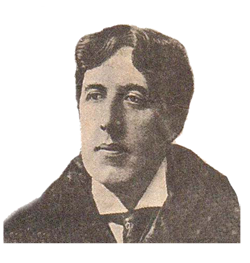

奧斯卡•王爾德，生於1854年10月16日，死於1900年11月30日，英國唯美主義者、作家、詩人、戲劇家、藝術家。
他生於愛爾蘭都柏林的一個家世卓越的家庭，父親威廉姆•王爾德爵士是一個外科醫生，母親是一位詩人與作家。
1874年他於進入牛津大學莫德林學院(Magdalen College)學習。在牛津，受到了沃爾特•佩特及約翰•拉斯金的審美觀念影響，並接觸新黑格爾派哲學、達爾文進化論和拉斐爾的作品，為他王往後成為唯美主義作家影響很大。
1882年，王爾德在美國作了一個精彩的巡迴講座，兩年後他與康斯坦斯•勞埃德(Constance Lloyd)結婚，育有兩個兒子。
1887年，王爾德成為一家婦女雜誌的執行總編輯，在雜誌上發表了他的一些小說、評論和詩。王爾德的作品以其詞藻華美、立意新穎和觀點鮮明聞名，他的第一本小說《道林•格雷的畫像》發表於1891年，之後他又發表了散文《社會主義下人的靈魂》，這兩部作品都十分成功，但真正為王爾德贏得名譽的是他的戲劇作品。可以說他的每一部戲劇作品都受著熱烈的歡迎，有一個時期，倫敦的舞臺上竟同時上演著他的三部作品。
19世紀末的維多利亞女王時代，英國上流社會新舊風尚的衝突激烈。王爾德的自由和大膽的作風很快地使他成為了這場衝突的祭品。1895年，昆斯貝理侯爵（Marquess of Queensberry）因兒子阿爾弗萊德與王爾德交往，感到不悅，公然斥責王爾德是一個同性戀者。
對此，憤怒的阿爾弗萊德叫王爾德上訴，告侯爵。結果王爾德上訴失敗，被反告曾“與其他男性發生傷風敗俗的行為”。王爾德被判有罪，在監獄服牢兩年。
1897年他獲釋後，立刻動身前往巴黎，他對於英國失望透頂，不再有絲毫留戀。其後他為了兩名孩子曾嘗試與康斯坦斯複合，但阿爾弗萊德亦同時表示想與王爾德重歸和好，最後王爾德放棄兩名孩子，選擇了阿爾弗萊德。王爾德以化名居住在法國，完成並出版了《瑞丁監獄之歌》，之後與阿爾弗萊德同遊義大利。但幾個月後，兩人再次分手。
1900年王爾德在好友羅伯特．羅比幫助下改信天主教。同年11月30日在巴黎病世，享年46歲。死後，在他巴黎的墓地上，按照他詩集的《斯芬克斯》意象，雕了一座小小的人面獅身像。
20世紀末，在遭到毀譽近一個世紀以後，英國終於給了王爾德樹立雕像的榮譽。1998年11月30日，王爾德的雕像在倫敦特拉法爾加廣場附近的阿德萊德街揭幕。雕像的標題為“與奧斯卡•王爾德的對話”，同時刻有王爾德常被引用的語錄：“我們都處在溝中，但是其中一些人在仰望著天空中的星星“
王爾德的作品不時流露出對於社會階級的嘲諷、以及對於「窮人」的關懷，作品不多，最被世人津津樂道的是他撰寫的童話，奇幻故事情節的背後有著處處顯見的饒有意味的生命哲理，如《快樂王子及其他故事》(1888)，包括〈夜鶯與玫瑰〉；《石榴屋》(1891)，包括〈魚夫和他的靈魂〉、〈小公主的生日〉等，充滿幽默諷刺的戲劇，包括《溫夫人的扇子》、《無足輕重的女人》、等，短篇小說有《坎特維爾城堡的鬼》、《人面獅身的女子》等，唯一的一部長篇小說《格雷的畫像》，描訴一名少年格雷走向頹廢墮落的過程，成為王爾德毀譽參半的代表作。